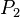

![[Main Page]](../../rsrc/bci2000logo.svg)
StatisticsFilter
Contributions
Synopsis
The StatisticsFilter is able to compute a number of statistical measures over a signal it is observing. Statistics are computed over decaying time windows of past data, and are thus updated continuously. Amongst other purposes, the StatisticsFilter may be used to compute feature maps displaying correlation between task and features online, during a measurement.
Location
http://www.bci2000.org/svn/trunk/src/contrib/SignalProcessing/Statistics
Versioning
Author
juergen.mellinger@uni-tuebingen.de
Source Code Revisions
- Initial development: 3758
- Tested under: 4151
- Known to compile under: 4164
Methods
Aim
To compute statistical measures from streams of data such that, at each point in time, estimates of those measure are available that depend on recent data more strongly than on old data.
Approach
Assigning weights to past data, such that a data point's weight only depends on its age, then doing "weighted statistics" on the data.
- "Weighted statistics" is a general approach typically used in order to correct for biases in samples, and formulae for common functions on weighted samples are e.g. implemented in the GNU Scientific Library: http://www.gnu.org/software/gsl/manual/html_node/Weighted-Samples.html
- "Weighted statistics" is formally equivalent to computation of statistical measures on probability distributions, by replacing probabilities with normalized weights.
Implementation
General derivation of formulae
Each statistical measure is computed from weighted power sums of observed data, i.e. for power n, each data point is taken to the nth power, and the weighted sum of data point powers is computed. Statistical measures such as count, mean, average, variance, etc. may then be expressed in terms of power sums, and computed from weighted data by obtaining weighted power sums as described.
Writing for the nth power sum, and for the nth raw moment of a distribution, we have:
.
From there, it is straightforward to obtain expressions for all statistical measures by using the well-known formulae applying connecting them to the raw moments:
count = ,
mean =  ,
,
variance = .
In the multivariate case, powers are to be replaced by outer products of vectors with themselves, e.g. is a vector,  is a square matrix, is an array with 3 indices, etc. Then, covariance becomes (writing ^ for the outer vector product):
covariance matrix = .
For statistical measures describing the relation between two sets of observables, e.g. the rsquared, or the z score, the same principle applies: the measure is expressed in terms of power sums over each of the two sets, and the weighted power sums from each set are inserted into the resulting expression.
Detailed formulae for all statistical measures may be found in the BCI2000 source code (which is written in a self-documenting manner): http://www.bci2000.org/tracproj/browser/trunk/src/extlib/math/statistics/ObserverBase.cpp
Weight function
As a weight function, we choose a decaying exponential, and take the associated time constant to represent a measure of "past observation duration". The decaying exponential is not chosen arbitrarily, but is of special significance because it represents a one-parametric distribution of minimal entropy over the interval (-inf, 0], just as the zero-mean Gaussian represents a one-parametric minimal-entropy distribution over the interval (-inf, inf).
At the same time, computation of the resulting power sums can be done very efficiently by an algorithm equivalent to a first-order low pass filter as follows:
1: Initialize nth power sum to 0 (all 0 entries in the multivariate case); 2: for each observed data vector do: 3: multiply nth power sum with a decay factor <= 1; 4: compute nth power of data vector (nth outer product with itself in the multivariate case); 5: add the result of (4) to the power sum; 6: done.
In each step, an appropriate decay factor may be determined from the user-supplied time constant, and the time interval between the previous and the current observation. For data sampled at equally spaced time points, the decay factor is constant.
Higher order moments
In the multivariate case, the implementation is restricted to , which is sufficient to compute covariance/correlation between two streams of data. In the univariate case, central moments of any order may be requested by the user. In either case, only those power sums are maintained which are necessary to compute the measure(s) requested by the user (e.g., the multivariate matrix is not maintained unless the user wants a covariance or correlation to be computed; if he requests an rsquared between sets of multivariate data, only the diagonal elements of the matrix are maintained for each set).
Dynamic resolution histograms=
If the user requests histogram or quantile data, past data values are stored together with weights, and kept in sorted order according to values. All stored weights are multiplied by the same decay factor as used for power sums when a new data point arrives. When the value of the new data point is already present, the weight of the existing entry is increased by 1. Otherwise, a new entry is created, and set to 1. In order for the algorithm to have constant (rather than linear) space requirements, pairs of entries are combined into a single entry when their associated values are below a certain threshold. The threshold is not fixed but dynamically determined such that the accuracy of computed quantiles stays above a user-specified minimum.
Functional Description
The StatisticsFilter allows to statistically observe incoming data, and to compute various statistical measures over these data. Data observation may be restricted to boolean conditions involving state variables. Also, when computing statistics, older data may be weighted less, allowing for continuously updated statistics.
In addition to its input signal, the StatisticsFilter is able to include its own output into observation.
User-defined Objects
Configuration of the StatisticsFilter is done by defining objects which belong to one of the following classes: ChannelSets, Observers, and Views. For each class, there exists a parameter containing definitions of objects that belong that class. In these matrix-valued parameters, columns vary according to class, but each row corresponds to exactly one object. Objects must be uniquely named, and object names are specified by setting the corresponding row's label (double-click the row's header).
Observers and ChannelSets
- Observers are the central components of the StatisticsFilter. They "observe" their inputs over time, and may provide statistical information based on their observations.
- For each observer, there exists an observation condition in a column labelled "observe when." There, a boolean expression is expected, such as "TargetCode==1". No observation is made while the observation condition evaluates to "false".
- Observers also have a typical observation duration in the column labelled "observe over". When computing statistics, data are exponentially weighted according to their age. An observer's "observe over" entry defines for which age a data point's weight has decayed to a factor of exp(-1). An observer's data will only age when new data is being observed, i.e. while its observation condition evaluates to "true".
- Observers keep their observation data in between runs, but may be reset at any time by specifying an appropriate expression in their "reset when" column.
- ChannelSets serve to define observers' inputs. Besides ChannelSets, BCI2000 expressions may be specified, e.g. in order to set a BCI2000 state to be the input to an observer. An observer's input is specified in the column labelled "observe what".
Views
- Views define the output of statistical information. A view is a mathematical expression, which may contain general mathematical functions such as log(), sqrt(), +, *, / as well as statistical functions operating on observer objects. E.g., to get the mean value of the signal observed by observer "obs1", one defines a view computing the expression "obs1.mean()".
- To compute the squared correlation coefficient ("Determination coefficient, r^2") between two conditions, one needs to define two observers, one for each condition. Into each observer's "observe when" column, one enters the desired condition, e.g. "TargetCode==1" and "TargetCode==2". Then, one creates a view to compute the r^2 value. For two observers "obs1" and "obs2", the corresponding expression would be "RSquared( obs1, obs2 )".
- To compute correlation between two signals, one defines a single observer with multivariate input. E.g., to compute a continuously updated correlation between the "TargetCode" state, and an input signal, one creates an observer with "true" as observation condition, i.e. an observer that observes continuously. For this observer, two entries are then specified under "observe what": First, "TargetCode", and then "AllChannels" (or the name of a different ChannelSet). This observer's input then has two dimensions: TargetCode and signal. In an output view, one may then write "obs.Correlation(1,2)", or short "obs.Correlation()", to view the 1,2 entry of the correlation matrix.
- Just like ChannelSets, views may be specified as input to observers. This allows for multi-level statistics, where statistical measures themselves become subject of statistical observation.
Output format
A view's output channels are the outer product of the input channels of the observers involved. Only "compatible" observers may be combined in a view's expression. When an observer has only a single ChannelSet in its input (as has been the case in all examples so far), then output channels directly correspond to input channels. When an observer has multivariate input, and there are ChannelSets associated with two of its input dimensions, then output channels correspond to pairwise combinations of input channels.
Output channel labels are constructed by combining input channel labels, such that is possible to identify each single combination in the output.
Computation of weighted statistics
In order to derive formulae for weighted statistics, one proceeds as if computing statistics from a histogram (or from pairs of histograms, in case of the RSquared() and ZScore() functions). First, the total weight of data points is normalized to 1. Then, statistical measures are expressed in terms of power sums of observed values. Finally, each contributing term in each power sum is weighted by the normalized weight of its corresponding data point.
Expressions
For the syntax of boolean and mathematical expressions, see: http://www.bci2000.org/wiki/index.php/User_Reference:Expression_Syntax
In addition to standard functions, the following statistical functions may be used when defining views:
RSquared( obs1, obs2, idx1, idx2 )
Computes the  value (Determination coefficient, squared Pearson's r) between two sets of observations. For univariate observers, index arguments may be omitted. Otherwise, they specify a pair of dimensions to combine between first and second observer. For more information about the determination coefficient, see here.
value (Determination coefficient, squared Pearson's r) between two sets of observations. For univariate observers, index arguments may be omitted. Otherwise, they specify a pair of dimensions to combine between first and second observer. For more information about the determination coefficient, see here.
ZScore( obs1, obs2, idx1, idx2 )
Computes a z score between two sets of observations, taking the first observer as a reference. As for the RSquared() function, indices refer to observer input dimensions, and may be omitted in case of two univariate observers.
obs.Count()
Computes the effective number of observations entering into statistics for observer "obs". The effective number of observations takes the weight decay of older observations into account, and approaches a constant for finite entries in the "observe over" column.
obs.Mean()
The mean of observations for observer "obs".
obs.Variance()
The variance of observations for each dimension of observer "obs".
obs.Covariance(idx1,idx2)
The covariance of observations for observer "obs". For a two-dimensional observer, indices may be omitted, resulting in the 1,2 entry of the covariance matrix. Diagonal elements of covariance are identical to the elements of variance.
obs.Correlation(idx1,idx2)
The correlation matrix for the dimensions of observer "obs". For a two-dimensional observer, indices may be omitted, resulting in the 1,2 entry of the correlation matrix. Diagonal elements of correlation are always 1.
obs.Skewness(), obs.Kurtosis()
The skewness and kurtosis for each dimension of observer "obs". Kurtosis is computed such that it becomes zero for Gaussian distributed data.
obs.CentralMoment(n)
The n-th central moment for each dimension of observer "obs".
obs.Quantile(p)
The value corresponding to the the given relative frequency p in each dimension of observer "obs". p is restricted by .
obs.QQuantiles(n)
For each dimension of observer "obs", a vector of values corresponding to the n-th q-quantile. This vector has n+1 entries, with the minimum in the first entry, and the maximum in the last entry.
obs.Histogram(center, resolution, numBins)
For each dimension of observer "obs", a vector of histogram frequencies with the specified properties.
Parameters
ChannelSets
Rows represent channel sets, defined as space-separated lists of channel names. Use row labels to name channel sets. Channel names may include * and ? wildcards, and character ranges enclosed in [], optionally negated by an exclamation mark. Ranges of channels may be specified using : or - to separate begin from end.
Observers
Rows represent observers. In the "observe what" column, you may specify channel sets, views, or expressions. In the "observe when" column, provide a boolean condition, or "true" in order to observe always. For "observe over", give a typical lifetime of an observation. Specify multiple entries in the first column in order to do multivariate statistics. An observer is reset to its initial state whenever the expression in the "reset when" column evaluates to true. By default, observers keep their information in between runs.
Views
Rows represent views. Views are defined by arithmetic expressions that may contain statistical functions, and properties of observers. Data from multiple columns will be concatenated in the output.
OutputView
Specify a view to be copied into the filter's output signal. When empty, the filter's input will be used as an output.
VisualizeViews
Wildcard expressions matching views to be displayed. Enter a * to display all defined views.
EventScripts
Specify statements to be executed during StartRun, StopRun, Initialize, or Process. This is intended for creating and initializing variables that are later used within Observer or View expressions.
States
"Observe when", "observe what", and view expressions may contain any state variable present in the system.